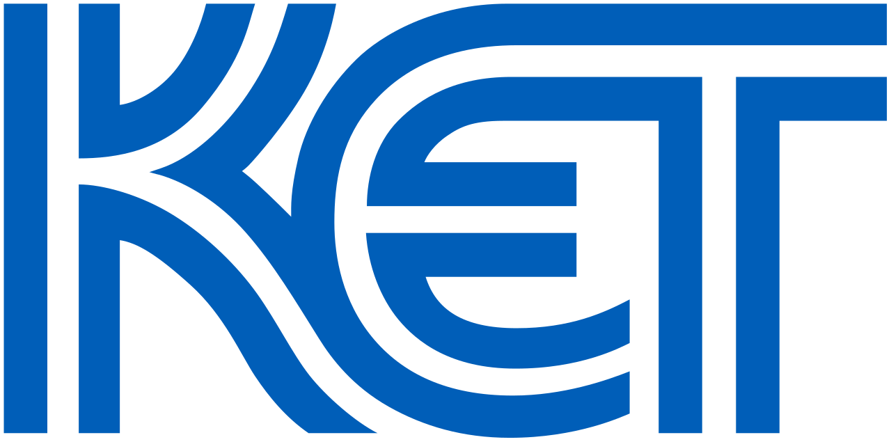
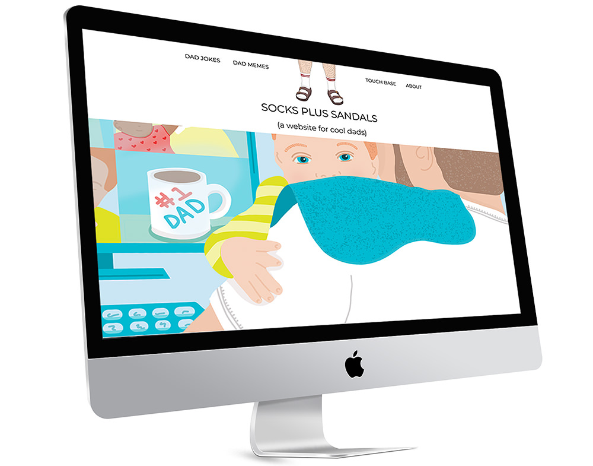
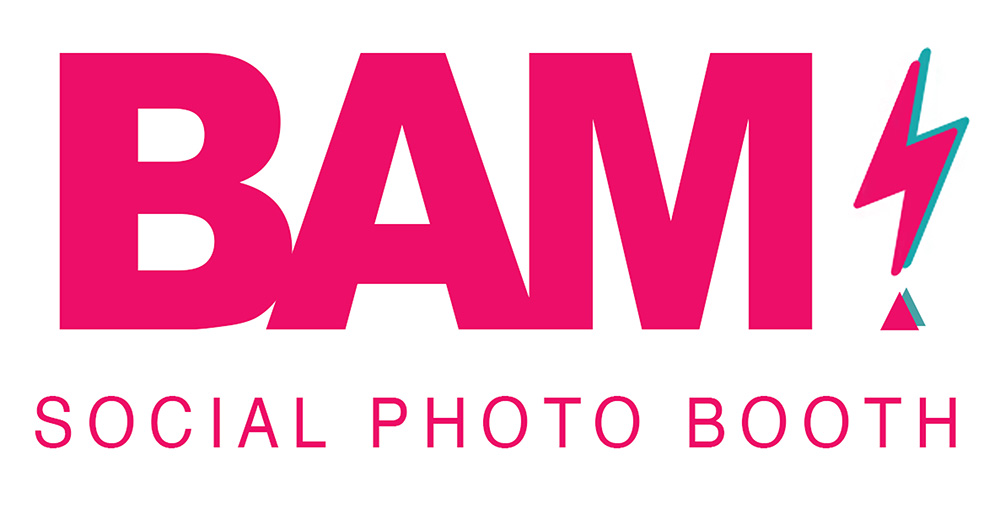
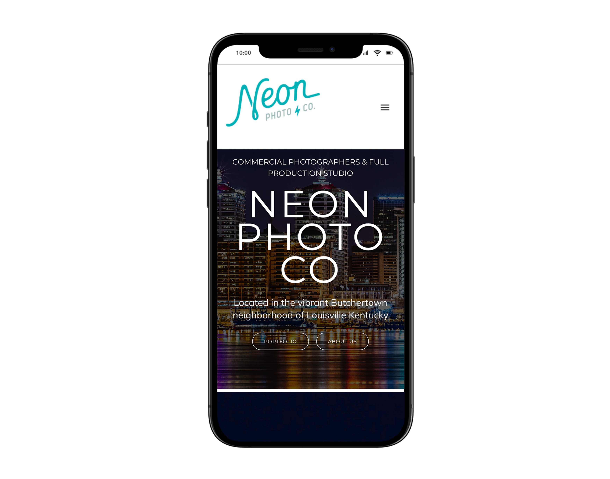
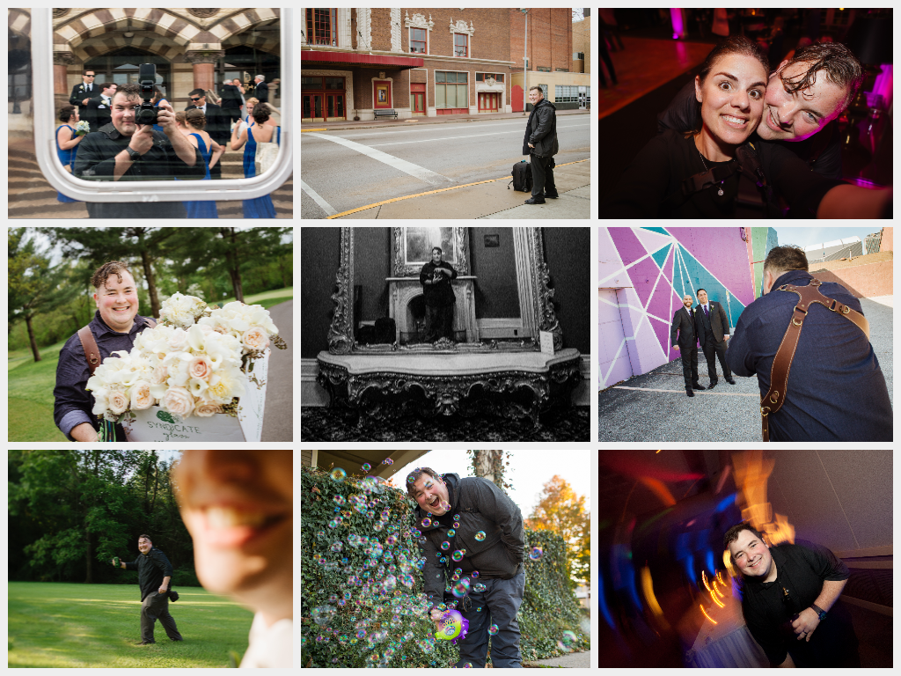
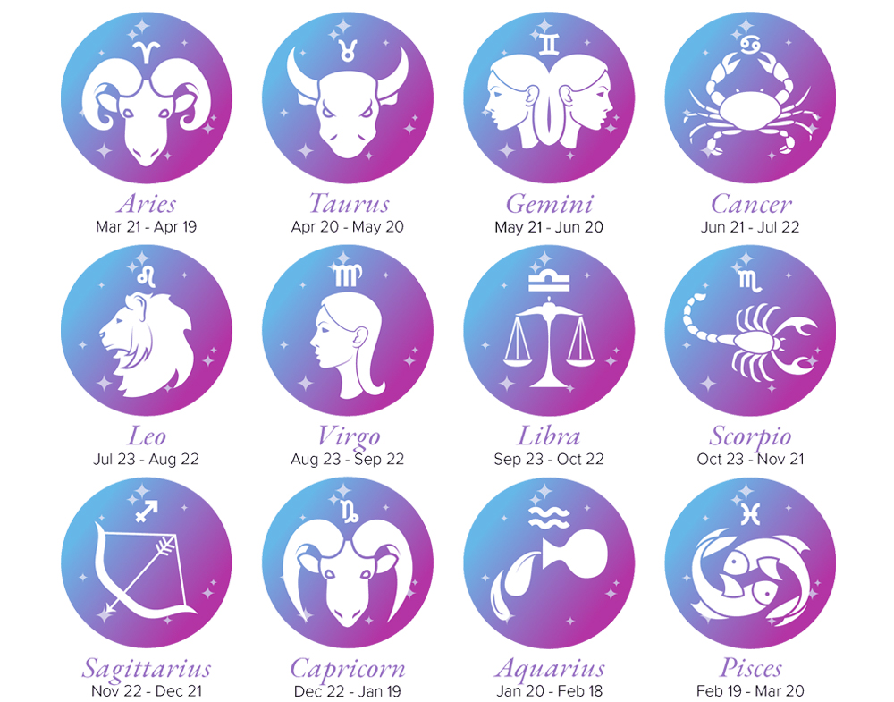

Who I Am
About Me
I'm a versatile problem solver at the intersection of technology, business, and creative strategy, with a strong background in entrepreneurship, product ownership, and web development. I thrive in roles that demand cross-functional collaboration, customer-centric thinking, and real technical execution.
Before tech, I built and ran a photography studio for over a decade — 14 employees, 1,000+ events, and every client relationship managed personally. That background in sales, client relations, and decision-making gave me an incredible foundation for everything that followed. Turns out earning trust fast, delivering under pressure, and keeping people aligned are exactly the skills product work requires.
I'm a lifelong learner who obsesses over how technology solves real problems. Lately that means integrating AI as a force-multiplier into my workflow to build things that simply weren't possible before. I get excited by impact, not just output.
KET
Digital Product Manager & Web Developer II since 2021.
Design & Dev
Full product lifecycle from UX concept to shipped code.
AI-Powered
Using AI as a real tool in design, dev, and product work.
Louisville, KY
Open to remote and in-person roles.
Where I've Been
Experience
Digital Product Manager & Web Developer II
Kentucky Education Television (KET)
- Led the creation of Web Tools, KET's intranet platform, from naming and design through development, collaborating with production, education, graphics, and marketing teams
- Spearheaded the redesign and launch of KET.org and the e-commerce platform Shop.KET.org
- Drive full product life cycles from concept through launch, ensuring alignment with organizational goals and stakeholder needs
- Chosen as co-lead for the Marketing & Web Development task force to improve cross-team collaboration
- Develop and maintain custom WordPress, Moodle, & SharePoint content management systems
KET AI Pilot Group / Web Team Representative
Representing the web team on KET's organization-wide AI pilot initiative, chartered to explore AI models and identify real applications across the organization. The web team had already been using AI for years; the mission was to bring the rest of the org along. Currently building a custom AI chatbot trained on KET's institutional knowledge: at minimum, it intelligently routes support tickets to the right department, at best, it answers questions outright and eliminates help tickets altogether.
Scholar Week
Initiated and designed a recurring "Scholar Week" sprint rotation, a structured program giving the team dedicated time to learn, experiment, and bring new ideas back to the work. Built from scratch with no playbook, just a belief that teams that learn together build better things.
Business Owner & Manager
Jesse Daniels Photography LLC
- Founded and scaled a full-service production studio, overseeing sales, client relations, and project execution
- Hired, trained, and managed a team of 14 employees while personally directing over 1,000 events
- Built a reputation for exceptional client relationships, strategic planning, and creative problem-solving, sustaining growth for over a decade
Full-Stack Development Certificate
Code Louisville , Louisville, KY
15-month intensive bootcamp: Front-End Web Development (HTML, CSS, JavaScript), C#, and JavaScript
Bachelor of Arts in Philosophy
University of Evansville
Emphasis in Technologies, Art, and Business. Foundation in critical thinking, ethical reasoning, and logical analysis.
What I've Built
Projects
Work that spans public broadcasting, accessibility, B2B tools, and beyond.
Access Insight Group
A fully functioning, 99% automated business built to help organizations evaluate, track, and improve accessibility across their digital products. AI-assisted research and analysis tooling surfaces insights faster than traditional audits, with the platform handling intake, reporting, and delivery end-to-end with minimal manual intervention.

Kentucky Education Television
Over 5 years at KET, I have pushed dozens of projects across the organization. Some highlights: a full redesign of KET.org, the launch of Shop.KET.org (KET's educational e-commerce platform), and Web Tools, the organization's internal intranet platform built from the ground up.
Resellers Management Tool
A custom B2B web application built to streamline reseller onboarding, tracking, and management workflows. Leveraged AI throughout development to ship features faster and build things that would have been out of reach before.

Socks Plus Sandals
A website for, you guessed it, COOL DADS. Built with HTML, CSS, and JavaScript for Code Louisville. If you rock Crocs with socks, this is your corner of the internet.

BAM Social Photo Booth
A brand built from the ground up, logo designed in Photoshop, website built in WordPress. Created an attention-grabbing identity for my photo booth rental business.

Neon Photo Co
A WordPress website built to advertise my commercial photography studio and portfolio. Designed for clean presentation of professional photography work across all devices.
What I Bring
Skills
Product Ownership & Strategy
Technical Development & Design
AI & Workflow Innovation
Business & Client Relations
Where It All Started
Photography
The summer after I graduated college I bought a camera and bet on myself. No clients, no playbook, just a belief I could build something real. Over the next thirteen years I founded a full-service production studio, grew it to a team of 14, and personally directed over 1,000 events.
Photography is one of the hardest ways to make a living. You are selling trust, delivering under pressure, getting one shot to make something beautiful that people keep forever. We did quite well from the bottom up.
That experience shapes how I work today. Reading a room before a shoot is the same skill as understanding what people need before they say it. Earning a client's trust fast is the same as walking into a stakeholder meeting. No safety net teaches you to ship, iterate, and decide with imperfect information.



Just For Fun
Jesse Stuff
Many of us have fond memories of mom baking sweet apple pies or smoking endless Virginia Slims. I have those memories too, but one of my fondest is my mom religiously reading her horoscope aloud every morning. I built this feature so you can check yours daily!
